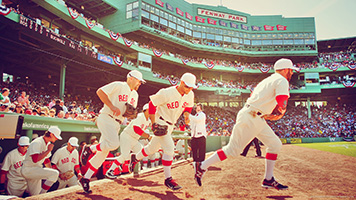

red sox team
The Boston Red Sox are an American professional baseball team based in Boston, Massachusetts. The Red Sox compete in Major League Baseball (MLB) as a member club of the American League (AL) East division. The Red Sox have won eight World Series championships and have played in 12. Founded in 1901 as one of the American League's eight charter franchises, the Red Sox' home ballpark has been Fenway Park since 1912. The "Red Sox" name was chosen by the team owner, John I. Taylor, around 1908, following the lead of previous teams that had been known as the "Boston Red Stockings", including the forerunner of the Atlanta Braves.